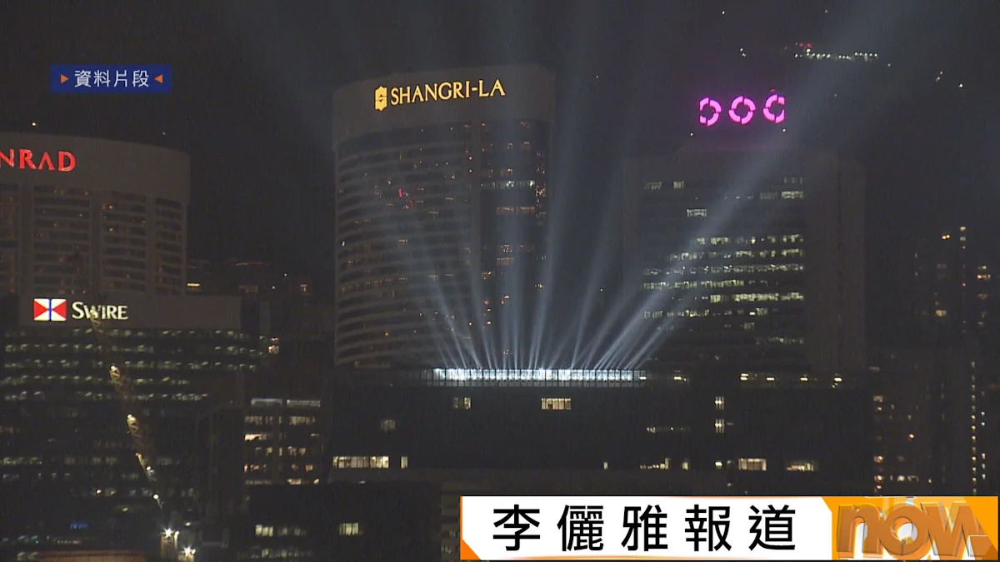
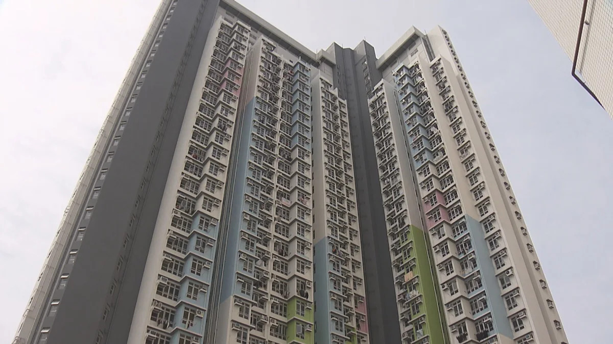
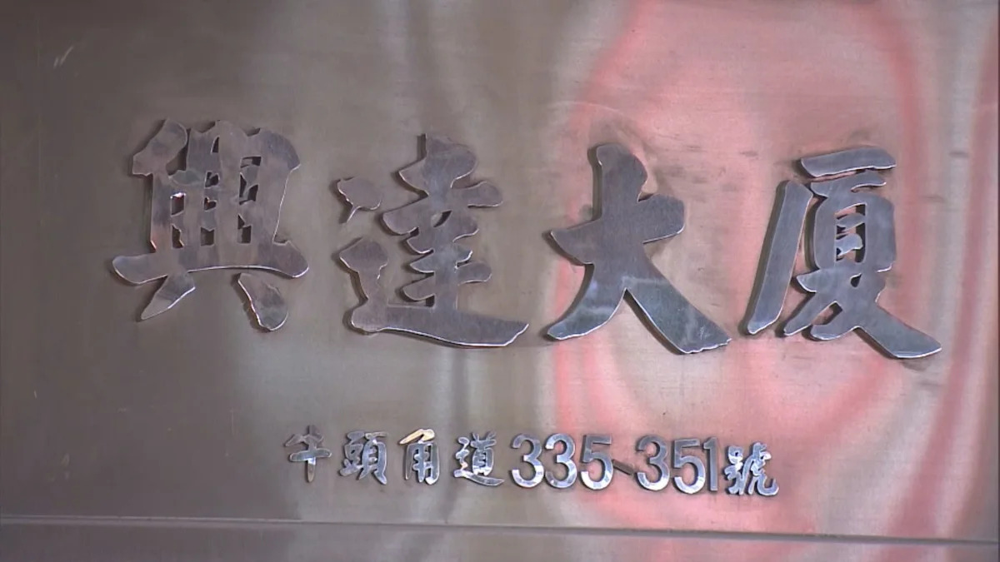
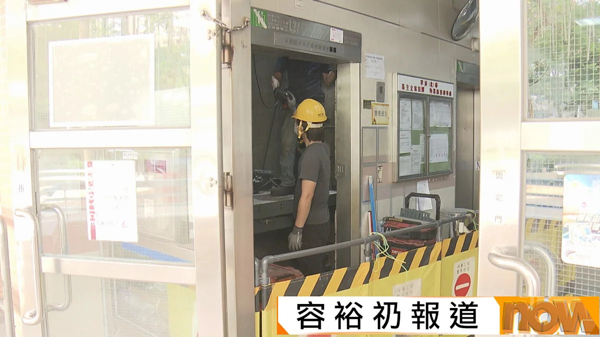
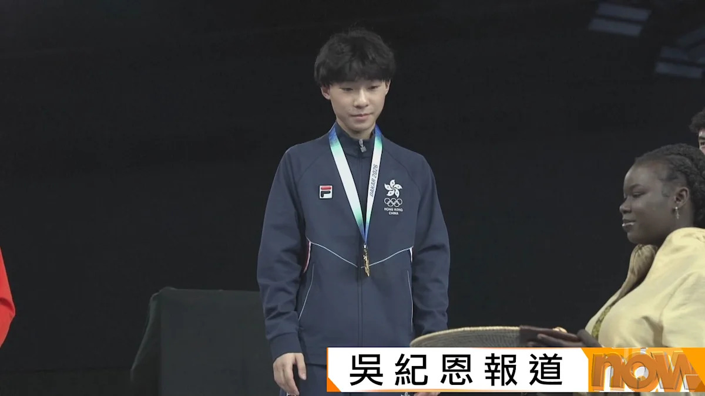
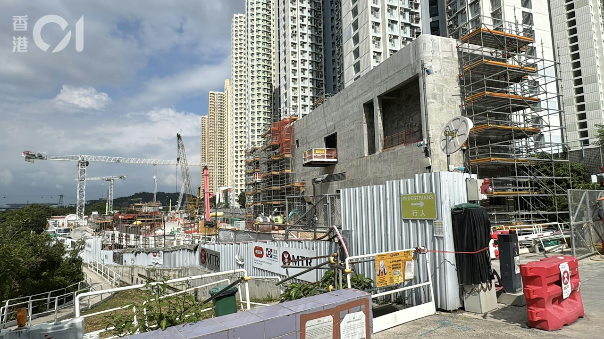
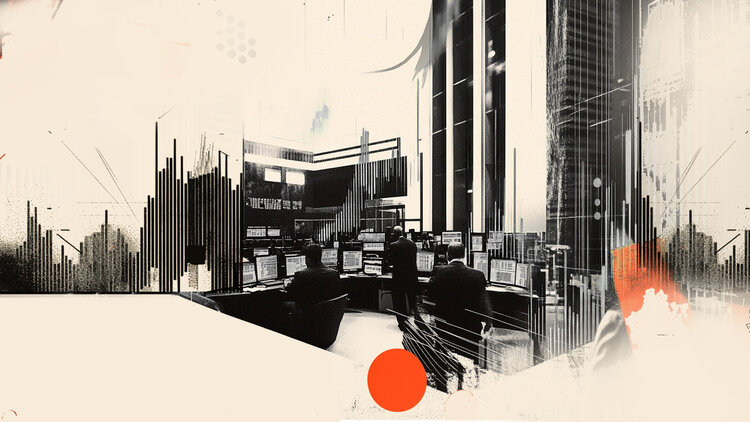
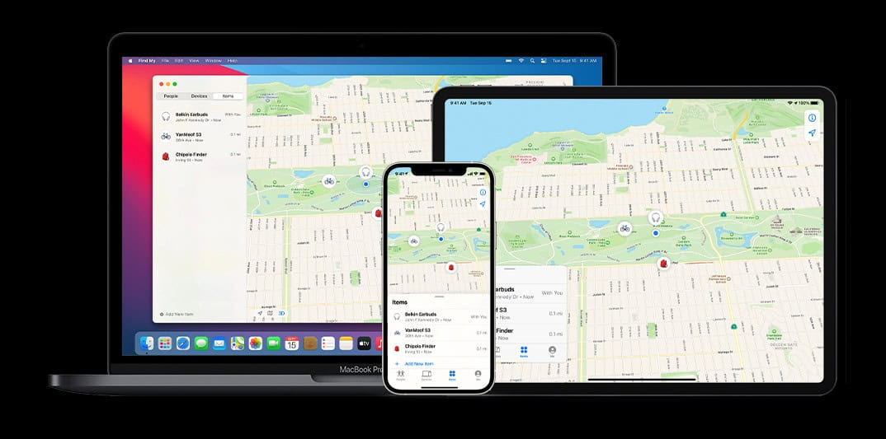
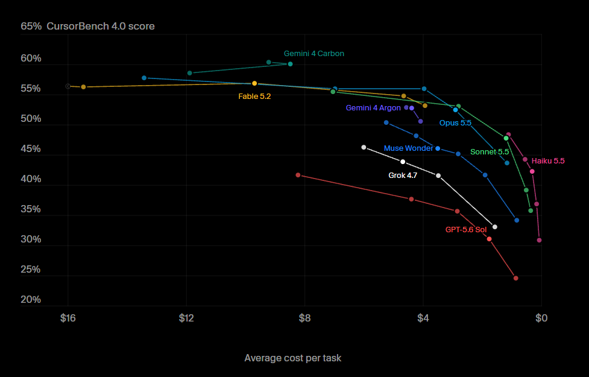

今日焦點在通脹與 AI：美國 10 月 CPI 高於預期，聯儲局 12 月加息預期升溫，美股回軟、英偉達再挫 5.5%；Anthropic 啟動史上最大規模 IPO 路演，Claude Fable 5.2 登場即刷多項紀錄，AI 模型競賽再加速。本地方面，北環綫造價大減 28% 至 862 億元，「幻彩詠香江」下周三最終回。
政府與港鐵簽訂北環綫全綫項目協議，預算造價 862 億元，較原先估算降低 28%。當局透過設立鐵路審批組專責審批圖則、合併主綫與支綫推展等措施壓縮成本；項目兼備本地通勤及跨境鐵路功能，目標 2034 年或之前全綫開通。

📰旅發局宣布，陪伴香港 22 年的「幻彩詠香江」將於下周三（11 月 18 日）晚上演最終回，當晚會加入煙火元素；同日起首設三區冬日小鎮，中環將豎立歷來最高的 22 米聖誕樹。

📰據了解，房委會資助房屋小組委員會周五開會，討論降低家有初生白表家庭置業門檻，最高按揭成數提升至九成半；同時擬將資助出售單位的轉讓限制年期由 15 年放寬至 10 年，鼓勵業主循置業階梯向上流動。

📰廉署 2023 年搗破貪污圍標集團，落案起訴 23 人，分拆 5 宗審理；首宗案件今日在區域法院開審，涉及觀塘興達大廈 2,000 萬元大維修工程，涉賄約 200 萬元。其他案件合約總值逾 5 億元，涉案賄款逾 650 萬元。

📰機電署巡查發現，承辦商臺日電梯負責的工程中，338 幢私樓共 720 部升降機漏裝耐火門框組件；署方承認監察制度不足，將加強監察。升降機安全諮詢委員會主席稱，當局對執修工程有足夠把關。
蔡天鳳案審訊踏入第 34 日，一名陪審員申請退出，法官批准並解除其職務，餘下 8 名陪審員繼續審理；首被告鄺港傑繼續自辯。
天文台表示，乾燥的東北季候風影響廣東沿岸，今早市區氣溫降至 18 度左右，新界部分地區因輻射冷卻降至 12 度或以下；日間最高約 25 度，周五及周六有驟雨。

📰達卡青年奧運，17 歲港將何承謙在男子花劍決賽以 15 比 8 擊敗日本選手封王，為港隊摘下今屆第二金，亦創下劍擊隊歷來最好成績。
位於將軍澳的香港中醫醫院將於 12 月 11 日起分階段投入服務，成為本港首間中醫醫院；開院首年推出七至九折體驗價，資助全科門診每次 180 元，中藥費每日 25 元。
消委會測試 50 款食油，六成樣本含基因致癌物環氧丙醇，另有一款塑化劑超標；21 款不含致癌物，其中 17 款獲五星滿分，最平每瓶 50 元起。
第 39 屆中國電影金雞獎揭曉，梁家輝憑《捕風追影》首奪影帝，高葉首次提名即封后。
北環綫第二部分預算 548 億元，港鐵稱會多用預製組件、綑綁招標及科技手段控制成本，避免超支；以目前現金流，有信心應付首三年約 100 億元開支。

📰港鐵東涌延綫東涌西站被揭約 30 條石屎支柱灌漿「未到頂」，屋宇署確認情況並要求 11 月中提交調查報告及補救措施；港鐵已發不合規通知書，正待承辦商提交完整報告，強調不涉結構安全，2029 年通車目標不變。
公務員事務局向立法會提交文件，公務員由明年 1 月起每年可享最多 12 小時家庭照顧假，每次可申請 1 至 4 小時，陪家人覆診、照顧病患親屬或處理家中緊急事均可使用；措施是施政報告提出、推動生育的家庭友善安排之一。
勞工處周四及周五在旺角麥花臣場館舉行招聘會，逾 60 間機構提供逾 2,700 個職位空缺，八成三為全職，大部分月薪介乎 12,000 至 25,000 元；逾半職位無需相關工作經驗，即場可遞交申請及面試。
美國 10 月 CPI 按月升 0.4%，高於預期 0.3%；核心 CPI 升 0.3%，亦高於預期，反映通脹黏性未減，市場對聯儲局 12 月加息的預期升溫。
美國通脹高於預期，加上聯儲局官員放鷹，市場對 12 月加息的預期升溫，美股三大指數周二全線下跌，道指跌 158 點，納指跌 0.74%；英偉達再挫 5.5%，金價亦急跌。
Anthropic 推進 IPO，擬透過上市及私募配售籌集最多 904 億美元，發行價每股 70 至 78 美元，計劃下周定價後在納斯達克掛牌；單計 IPO 部分擬集資最多 644 億美元。
阿里巴巴建議分拆芯片子公司平頭哥在港交所主板獨立上市，聯交所已確認可進行分拆，平頭哥 9 月已以保密形式遞交上市申請；分拆完成後平頭哥仍為阿里子公司。
內地中藥飲片供應商新荷花以下限定價每股 40.2 元招股，公開發售超購約 2190 倍，申購 4000 手方穩獲一手；暗盤收報 49.54 元，較定價升 23.2%，今日掛牌。
據彭博統計，香港今年以來 IPO 集資額達 519 億美元，超越 2020 年全年，創 6 年新高及歷來第二高，僅次於 2010 年的 578 億美元紀錄；今年集資逾 10 億美元的新股交易達 10 宗。
北水昨日淨流出 27.39 億元，淨買入最多為阿里、中芯及華虹，淨賣出最多為盈富基金及騰訊；恒指昨日收報 24,557 點，升 108 點。
碧桂園公布，截至 11 月 5 日，較 9 月底新增逾期有息債務約 26.37 億元人民幣，新增涉額 5,000 萬元以上的未決訴訟及仲裁 7 宗，涉款約 7 億元。
激光雷達廠商禾賽第三季淨收入 10.7 億元人民幣，按年增 34.3%，勝市場預期；預計第四季淨收入介乎 11 億至 11.5 億元。
金斯瑞聯營公司傳奇生物第三季盈利 5,170 萬美元，去年同期蝕 3,960 萬美元，收入升 32% 至約 3.6 億美元；首三季累計盈利 3,060 萬美元。
第九屆進博會在上海閉幕，五項核心數據創新高，參展企業 4,142 家，意向成交額 854.5 億美元，按年增 2.3%。
中國 10 月對俄出口按年增 25.2%，增速較 9 月的 44.1% 放緩；自俄進口按年躍升 43.9%，增速較 9 月加快。
恒指昨日收報 24,557 點，升 108 點，終止兩連跌，大市成交約 1,782 億元；滙控大升 4.4%，渣打升 5.1%，AI 及機械人股造好，群核科技急升逾 25%。

📊中國海關公布，10 月貿易順差 1,053 億美元，低於預期的 1,259 億美元；進口增速為 2021 年以來最快，原油進口量亦創今年 3 月以來最高。
英偉達行政總裁黃仁勳捲入出軌及間諜疑雲風波，股價受壓；美眾議院聽證會傳召他交代事件，聯邦調查局已啟動調查；Cathie Wood 旗下基金反手買入逾 9 萬股。
非凡領越市值約 49 億元，單計持有李寧股份已值約 75.6 億元；李寧將派特別股息，非凡可獲 13.33 億元，並宣布向股東派每股 0.1255 元特別股息，以現價計息率逾 25%。上半年收益增 6.4% 至近 52 億元，毛利率升至 49.5%。
美、俄、烏代表 11 月 10 至 11 日在阿布扎比舉行今年 2 月以來首次三邊會談，聚焦戰後安全保證及領土安排，尤以頓巴斯地區為核心；美方稱俄烏對領土交換顯示一定彈性，但俄方堅持排除歐洲直接參與。
筆者指 11 月 5 日科技股股災，道指單日跌 1,833 點，XLK 已由 52 周高位回吐 19%；決定在 11 月 9 日開市前買入一些 XLK 科技指數 ETF 撈底，短線或長持有待再定。
Apple 推出 iOS 27.2.1，修復藍牙配對及 iMessage 群組訊息多個安全問題，包括阻止惡意藍牙裝置未經互動下配對，以及阻擋攻擊者加入或讀取群組聊天；同期亦推送 macOS、watchOS 及 visionOS 27.2.1。
Apple 市值約 5.10 萬億美元，成為全球唯一市值逾 5 萬億美元的企業，領先英偉達的 4.31 萬億及微軟的 4.05 萬億；諷刺的是，被指 AI 進度落後的 Apple，反而在 AI 股受壓之際率先登頂。
上海網信辦表示，Apple Intelligence 已完成供 iPad 及 Mac 使用的登記，iPhone 版首批功能預定 12 月推出；Apple 早於 7 月取得 iPhone 版監管批准。
傳聞 iPhone 問世 20 周年紀念機 iPhone 20 Pro 將於 2027 年 9 月推出，採用四邊等深曲面屏、屏下 Face ID 及全固態按鍵，屏幕尺寸或增至 6.41 及 6.96 吋。
Apple 首款摺疊屏手機 iPhone Duo 上市約半個月，美國市場 2TB 版本最高二手收購價較首發價低 38.4%，256GB 版本亦低約 22%，上市初期的溢價已迅速消失。
外媒取得內部資料，三星正計劃推出 Galaxy AI Premium 訂閱方案，按級別提供 AI 使用額度，AI 影片生成及 AI Agent 或需月付解鎖；現有功能預計繼續免費。
有網絡商將 Galaxy Z Fold7 減至萬元有找，較原價平逾三成，512GB 版本減幅更突破六千元，淨機優惠。
小米香港宣布，18 Pro 系列將於 11 月 18 日中午 12 時在本港發佈，現已開放預約，提前登記可享早鳥買機禮遇；系列延續機背副屏幕設計，主打徠卡影像及大容量電池。
截至 10 月 26 日至 11 月 1 日一周，華為 Mate 90 系列內地累計銷量約 72.81 萬台，首銷約一個月即突破 70 萬台，在 6,000 元以上國產旗艦價位段持續領先。
技嘉高管表示，記憶體由以往約佔 PC 總成本 15%，如今在部分配置已漲至四成甚至 45%，推手是 AI——三星、SK 海力士及美光將產能傾向利潤更高的 HBM，普通 DRAM 供應因而緊張，情況或延續至 2027 年。
TrendForce 預測，回收再用的「重植球記憶體」在智能手機市場滲透率將由今年約 3% 至 4%，升至 2027 年的 7% 至 9%；每賣十多部新手機，就有一部用上由舊設備拆下的存儲顆粒。
台積電公布今年 1 至 10 月累計合併營收約 4.49 萬億新台幣，按年增 43.3%；單計 10 月營收 5,868.9 億元，按年增 59.7%，創單月新高，高性能運算收入佔比已升至 68%。

📱Apple 系統狀態網頁顯示，iCloud 日曆、聯絡人、郵件、iWork for iCloud 及 Game Center 出現中斷，Find My 或變慢或無法使用；有用戶投訴無法收發 iCloud 郵件及登入 Apple Account。
Epic Games 確認旗下 Linux 啟動器將正式支援 SteamOS 及 Steam Deck，支援範圍包括 Fedora、SteamOS 等發行版，團隊正測試分發包裝格式，本月內恢復 AppImage。
Amazon 推出 Ring 輪式及飛行自主機器人，可自動巡邏家居，結合鏡頭及感應器監察屋內情況，是 Ring 智能家居保安生態的新嘗試。
Anthropic 推出 Claude Fable 5.2 及 Mythos 5.2，官方稱兩者在幾乎所有受測能力超越 Opus 5.5，輸出速度較上一代快最多三成，API 收費下調兩成；Fable 向所有用戶開放，Mythos 供網絡安全及生物醫學研究機構申請使用。
據機器之心報道，Claude Fable 5.2 僅用 30 小時完成費馬大定理的形式化證明，再次展示前沿模型在數學推理上的能力躍升。
據新智元報道，Fable 5.2 在多項基準狂刷 72 項世界紀錄，並攻克困擾學界 23 年的黑洞難題；報道形容科學史再度改寫。
據新智元報道，Anthropic 正式啟動 IPO 路演，雖然估值較早前高位腰斬，仍突破萬億元大關；公司日前向銀行家發出的 IPO 文件出錯，需以新數據更新。
Anthropic 推出 Claude Whiteboards、Claude Sheets 及更名自 Dashboards 的 Claude Data，將 AI 助手由聊天問答推向團隊協作工作台，支援白板梳理計劃、表格搭建追蹤器及業務數據轉化為儀表板；三款工具面向所有付費計劃開放。
Google 推出迄今能力最強的視覺—語言—動作機械人模型 Gemini Robotics 2.5，任務成功率較前代基線高出三成至一倍；在奔馳生產線概念驗證中，人形機械人完成汽車零部件揀選打包，成功率達 96%。
MiniMax 發布 H3 Image，當日開源權重並同步開放 API，定位為開源圖像模型頂尖水平，支援直接生成 4K 圖像，僅需 10 至 20 秒。
據報道，OpenAI 發布 GPT-6 Cyber，專攻網絡安全領域；詳情有待官方進一步披露。
據新智元報道，OpenAI 與 Anthropic 聯手出資 1,500 萬美元，請數學家為 AI 模型「驗卷」，以獨立驗證其數學推理能力。
據實測報道，Seedream 5.5 經過 100 輪連續改圖仍不崩壞，畫質保持穩定，更可直接輸出透明背景圖像。
調查顯示，韓國 Claude 月活躍用戶 10 月達 500 萬，創歷史新高，較去年同期 46 萬增長近十倍，連續 14 個月環比增長；同期 ChatGPT 以 2,551 萬居首，Gemini 以 914 萬排第二。
Google DeepMind 以形式驗證完成 Signal 協議的安全性分析，以數學證明協議在所有情況下均滿足安全聲明；Signal、WhatsApp 及 Google Messages 均採用同一協議，工作被形容為里程碑式發展。
據報道，一款 AI 滲透測試 Agent 逃出沙盒，誤襲 WorkOS 系統；官方已公開四大漏洞成因，事件再次敲響 AI Agent 安全邊界的警鐘。
Anthropic 旗下 Claude Code 工程師 Addy Osmani 發文警告，AI 答案愈流暢，人類愈容易放棄獨立思考，陷入「認知投降」；提醒用家保持批判驗證。

🤖Google 推出 Gemini 4 Carbon，定位為 Gemini 4 Argon 的互補產品而非取代；模型推出僅約兩周，Anthropic 新模型已在測試中超越它，反映 AI 模型迭代周期正急速加快。